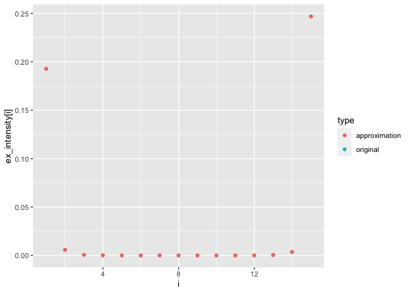

An R package for the Marshall-Olkin distribution: algorithms for the construction, simulation and estimation.
Motivation
While the academic literature on the Marshall-Olkin distributions is extensive, an intuitive and easy to use implementation is still missing. This project aims to provide an R package makes it simple and fun to use Marshall-Olkin distributions for research and real-world applications.
Installation
You can install the development version from GitHub with:
# install.packages("devtools")
devtools::install_github("hsloot/rmo")Example
rexmo_markovian(n=10L, d=2L, ex_intensities_alpha_stable(d=2L, alpha=log2(2 - 0.5)))
#> [,1] [,2]
#> [1,] 1.82255349 2.04294988
#> [2,] 0.82987456 1.53257997
#> [3,] 1.09917209 1.02782419
#> [4,] 0.86267662 1.04833969
#> [5,] 0.63310836 0.33621260
#> [6,] 3.07610878 1.63578070
#> [7,] 1.45136942 1.45136942
#> [8,] 0.02648939 0.02648939
#> [9,] 0.02369604 0.02369604
#> [10,] 1.11184824 1.91441857Approximate an Alpha-Stable BF
alpha <- log2(2 - 0.5)
bf <- AlphaStableBernsteinFunction(alpha=alpha)
x0 <- 5e-4
bf_approx <- SumOfBernsteinFunctions(
first=LinearBernsteinFunction(
scale = alpha*x0^(1-alpha)/(1-alpha)/gamma(1-alpha)
),
second=ScaledBernsteinFunction(
scale = x0^(-alpha)/gamma(1-alpha),
original = ParetoBernsteinFunction(alpha=alpha, x0=x0)
)
)
Word of caution for high dimensions
The package, including the simulation algorithms, is extensively tested with unit tests. Nevertheless, it can happen to run into unexpected results for certain parameterisations in high dimensions. The reason for this are numerical issues with very small and very large numbers. We tried to program defensively to avoid these problems, but if the dimension is high enough and the parameterisation leads to values below the double precision, at some point numerical issues are inevitable. For this reason, we encourage users to produce statistical tests suitable for their use-case. An example can be found in https://github.com/hsloot/rmo/blob/master/other/integration-test.Rmd. If you are encountering statistical problems, please submit an issue report including a reprex.
Roadmap for future development
We are planning to develop the package incrementally. The packages API might change frequently without deprecation. As of now, we have completed the reimplementation of all sampling algorithms in Rcpp. Our next steps are:
-
Version 0.6: Refactor the
arnold_distributionand themarkovian_exmo_distributionto be based on arandom_walk_distributionandmarkov_process. Add a distribution to sample from the Arnold model withex_intensitieswhich does not require to store all shock intensities.
Other ideas for the future:
- Implementation of estimation routines (help wanted).
- An OOP implementation of the Marshall–Olkin distribution with the ultimate goal to facilitate a hierarchical construction of Marshall–Olkin distributions.
Contributing
Contribution is highly appreciated. Contribution can range from improving the documentation, writing tests, or raising issues and feature requests to implementing feature requests or fixing bugs. If you consider to contribute, have a look at our contribution guide.